Природа Южной Каролины. Цветы и не только.
Часть 2, добытая на болотах.
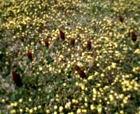
К сожалению, качество снимка не позволяет вполне оценить красоту этого
места.
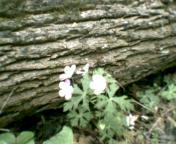
Подколодные цветы. Вообще, они ярко-голубые, но опять же, на снимке не то...
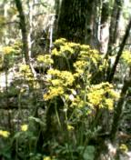
Сюда пришлось подбираться, ступая по очень сомнительной болотной почве.
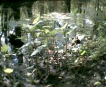
Болотная растительность.
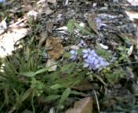
Не знаю, что это.
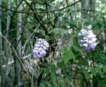
Это цветы, визуально напоминают сирень, но растут на лианах. Совершенно
фантастически выглядят пальмы, увитые лианами. Цветы вплетены в кроны.
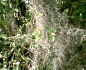
Испанский мох. Классическое растение американского юга. Говоря, языком
точным, это лишайник, растуший на деревьях. Порой "кроны" образованные
им смотрятся ничуть не меньше, настоящих крон. Зимой - вообще
мистическое зрелище.
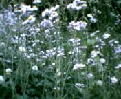
Голубая ромашка, почему бы и нет? Конечно это что-то другое. Но похоже
на ромашку.
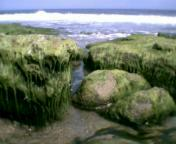
Водоросли Атлантического побережья.
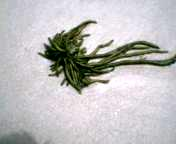
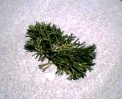
Саргассы на песке. Саргассы - это плавучие водоросли.
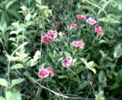
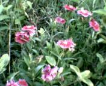
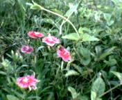
Лесные гвоздики.
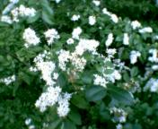
По-моему, это черемуха.
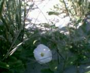
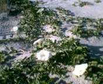
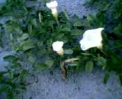
Гигантский вьюнок на дюнах побережья.
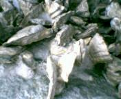
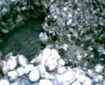
Колония устриц во время отлива. И врагу не пожелаю наступить на
это дело босой ногой.
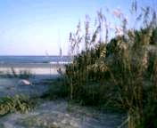
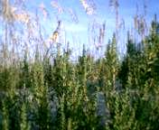
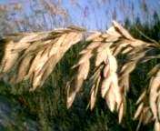
Растительность дюн.
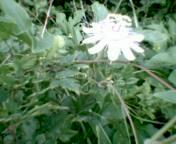
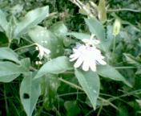
Не знаю что это такое.
Назад|На главную